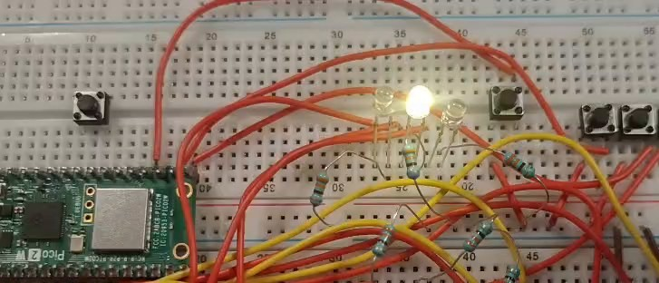

Session 8 — Interrupt-Driven LED Roulette (Speed Control + Center Stop)
Goal (one sentence): Drive a 5-LED "roulette" light chaser from the SIO registers and control its speed, and its stop condition, with three push-button GPIO interrupts instead of polling.
Setup
- Pin map:
PIN_A=GP8,PIN_B=GP7,PIN_C=GP6,PIN_D=GP5,PIN_E=GP4 → 5 LEDs (with series resistors) forming the roulette;PIN_BA=GP16 (speed up / harder),PIN_BB=GP17 (slow down / easier),PIN_BC=GP18 (stop, only counts on the center LED). - Photo of the breadboard:

- Non-default: internal pull-ups enabled on
PIN_BA,PIN_BB,PIN_BC(gpio_pull_up), so all three buttons are active-low and the ISR fires onGPIO_IRQ_EDGE_FALL. LEDs are driven directly throughsio_hw(nogpio_put). Default 150 MHzclk_sys, nothing else changed.
What I did
- Wired the 5 LEDs (with resistors) to GP4–GP8 and the 3 push buttons to GP16–GP18 with internal pull-ups.
- Wrote the chase loop with
sio_hw->gpio_set/gpio_clr, bouncingcounterfrom 0 up to 4 and back down so the lit LED sweeps E→A→E instead of just wrapping around. - Registered the interrupt callback once, on
PIN_BA, withgpio_set_irq_enabled_with_callback, then enabledPIN_BBandPIN_BCwith plaingpio_set_irq_enabled(all three share the same ISR). - Inside the ISR:
PIN_BAdecreasesspeed(floor 100 ms),PIN_BBincreases it, andPIN_BC— only whencounter == 2— clears every LED and calls a blocking blink routine. - Flashed the board, tested each button by hand, and recorded a short demo (audio removed):
img/s08_roulette_demo.mp4.
Evidence
| # | File | What it shows | |
|---|---|---|---|
| E1 | img/s08_roulette_demo.mp4 |
Chase running at default speed (~0:00), then visibly faster after pressing the speed-up button a few times (~0:06–0:09) and then slower after pressing the speed-down button (~0:09-0:12) | Confirms speed actually changes on a button press |
| E2 | img/s08_roulette_demo.mp4 |
Right near the end of the clip (~0:16.8 s), all 5 LEDs turn off together while the lit LED (the middle one) start to blink | Confirms the winning condition |
What went wrong
- Callback overwritten: I called
gpio_set_irq_enabled_with_callbackonce per button (once forPIN_BA, once forPIN_BB, once forPIN_BC), assuming each call attached its own handler. It doesn't — that function sets one shared callback per core, so each new call silently replaced the previous one and only the last button actually worked. Fix: callgpio_set_irq_enabled_with_callbackonce (onPIN_BA) and use plaingpio_set_irq_enabledforPIN_BBandPIN_BC, since all three land in the samegpio_isranyway. staticinstead ofvolatile:speedandcounterwere first declaredstatic. The main loop kept reading a stale value because the compiler had no reason to think the ISR could change them between reads. Switching both tovolatilefixed it.sleep_msinside the ISR: the first version of the "stop" blink calledsleep_ms()from insidegpio_isr, which froze the whole program —sleep_mswaits on the timer/event system, and calling it from interrupt context stalled everything instead of just pausing. Replaced it withbusy_wait_msinsideblink_blocking, so the ISR blocks the CPU on purpose without touching the timer/event hardware.
Code
...
volatile int speed = 500; // was `static` — main loop read a stale copy
volatile int counter = 0;
...
static void gpio_isr(uint gpio, uint32_t events) {
if (events & GPIO_IRQ_EDGE_FALL) {
if (gpio == PIN_BC && counter == 2) { // only stop on the center LED
...
blink_blocking(6, 50, 300); // busy_wait_ms inside — see below
} else if (gpio == PIN_BB) {
speed = speed + 50; // slow down
} else if (gpio == PIN_BA) {
if (speed >= 100) speed = speed - 50; // speed up, floor at 100 ms
}
}
gpio_acknowledge_irq(gpio, events);
}
...
int main(void) {
...
// register the callback ONCE — a second call with a different pin overwrites it
gpio_set_irq_enabled_with_callback(PIN_BA, GPIO_IRQ_EDGE_FALL, true, &gpio_isr);
gpio_set_irq_enabled(PIN_BB, GPIO_IRQ_EDGE_FALL, true); // shares the same ISR
gpio_set_irq_enabled(PIN_BC, GPIO_IRQ_EDGE_FALL, true);
...
}
Full file at src/s08_roulette/Roulette.c.
Open question
Why does a second gpio_set_irq_enabled_with_callback call silently replace the first instead of raising an error — is there really only one raw NVIC entry point per core for every GPIO pin, with the SDK keeping a single function-pointer slot that all pins' edge events get dispatched through? Want to check irq.c in the Pico SDK next session to see how the shared handler figures out which pin actually fired.